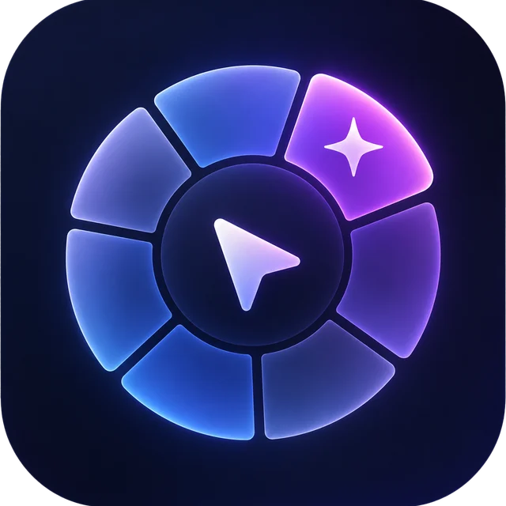
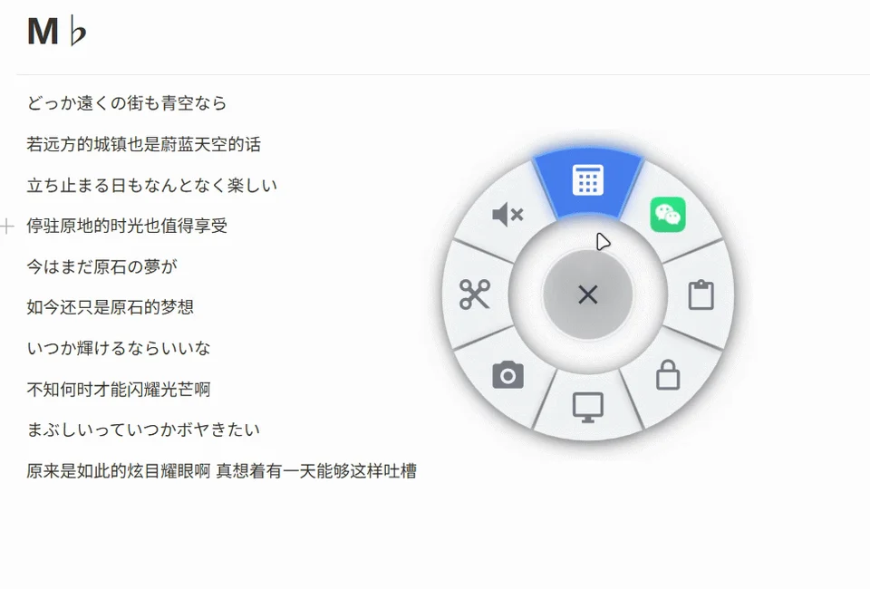
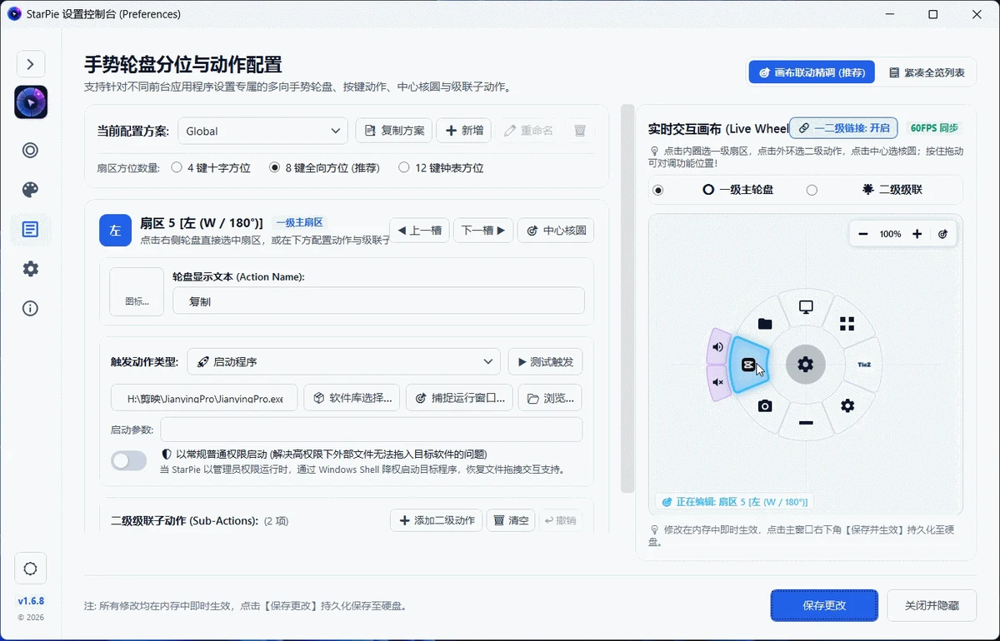
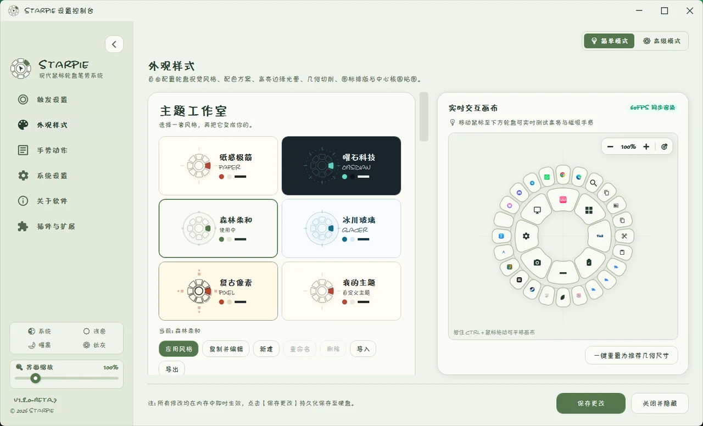

层层展开，井然有序
多级子轮盘与蜂窝扇，把一组相关动作放在同一个方向。

网页交互示意，不会执行电脑上的操作
不再来回寻找图标，也不必记住所有快捷键。让熟悉的方向，成为你的肌肉记忆。
启动应用、复制粘贴、切换窗口、截取屏幕……把高频操作放进轮盘，顺着手势，一划即达。

工作时是效率助手，创作时是灵感捷径。为不同应用设置专属方案，让星盘在你需要时，出现你需要的操作。

多级子轮盘与蜂窝扇，把一组相关动作放在同一个方向。
支持多段方向组合与可视化轨迹，让动作跟着你的手走。
窗口切换、平铺、跨屏与置顶，让桌面保持你的节奏。
原生应用搜索与分类过滤，想打开的应用不用翻找。
支持 Windows 本地离线 OCR，也可配置 AI 与 HTTP 识别接口。
基于 C# 与 WPF，不打包浏览器内核，专注 Windows 桌面体验。
从扇区形态到颜色、图标与文字排版，让工具融入你的桌面。喜欢简洁，或是想要一点与众不同，都可以。

从一个简单的手势开始，找到自己的效率节奏。
Windows 10 / 11 · x64以上入口均前往 GitHub 正式版发布页，请在 Assets 中选择对应安装包。测试版与历史版本
你可以免费使用 StarPie，也欢迎分享体验、反馈问题，或一起参与改进。
如果星盘让你的操作更顺手，欢迎支持它的持续开发。每一份心意，都能帮助我们投入更多时间，完善功能与使用体验。
支持 StarPie 开发不会替代普通右键单击。默认通过按住右键并滑动呼出轮盘，普通右键单击仍然显示系统或应用的原生菜单。触发方式也可以自行配置。
初次使用推荐安装版；希望解压即用可以选择独立便携版。这两种版本都内置运行时。只有已安装 .NET 8 Desktop Runtime 时，才建议选择轻量版。
它们属于 v1.8.0 Beta 测试线。请在 Releases 中查看标记为 Pre-release 的版本，阅读相应发布说明，并在升级前备份配置。正式版与测试版的功能可能不同。
可以。StarPie 是采用 MIT 许可证的免费开源项目。欢迎在 GitHub 查看源码、反馈问题、分享使用方式，或参与改进。